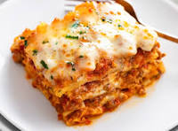

Ramen Recipe

Lasagna
Description
In this article, we will be sharing our favourite lasagna recipe. Read more to find out!
Ingredients
- Ramen Noodles
- Soup Stock
- Chives / Spring Onions
- Half Boiled Egg
Steps
- First put the noodles into boiling water
- Then, chop up the green onions and any vegetables
- Open up the package of half boiled eggs, and slice in half
- Boil the soup stock then add the noodles in